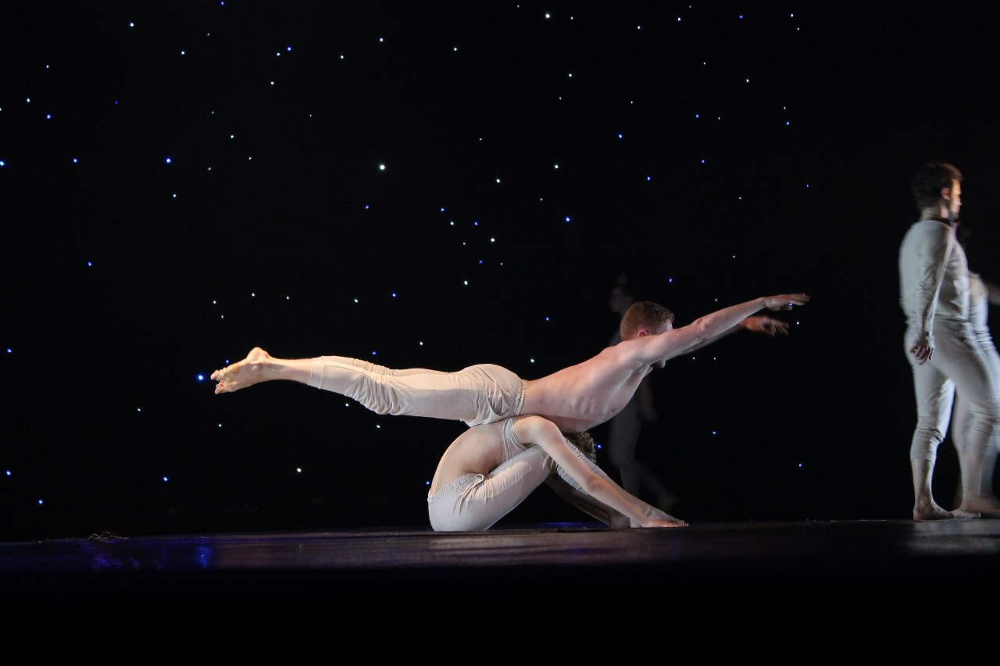
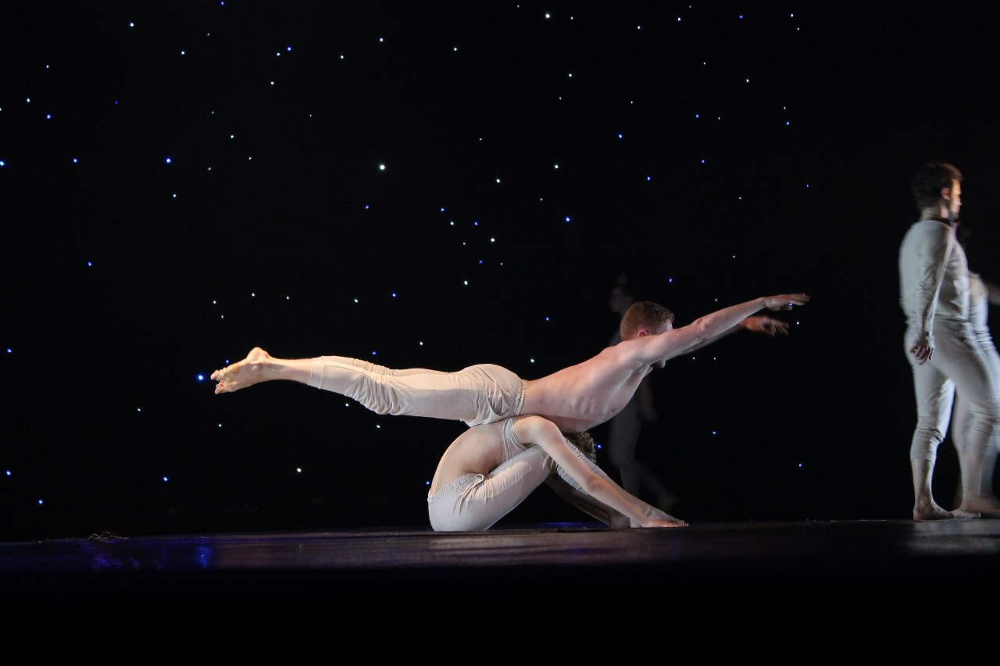

Репертуар
[ intro ]
Жизнь до ее начала. Стоит только задуматься, сколько препятствий, сложностей, страхов, непонятностей и преград мы преодолеваем прежде, чем начинаем жить, прежде, чем становимся частью большого мира.
Музыка: Одноактный балет - Intro

 

[ дождь? ]
То невероятное ощущение, когда после долгих месяцев жары и засухи, чувствуешь в воздухе запах грозы, а на лице капли дождя
Музыка: Paolo Nutini – Iron Sky
[ жестрокий романс ]
и все-таки что ж это было? чего так хочется и жаль? так и не знаю, победила ль? побеждена ль?
Музыка: Валентина Пономарева - Под лаской плюшевого пледа
[ если ]
Вопрос! Почему нам бывает так сложно принять свое счастье? Никто не знает? Откуда появляется постоянное ожидание подвоха, ощущение того, что не заслужил, что чувствовать гармонию – не для тебя? Почему мы все считаем, что счастье это сложно?
Музыка: Cat Power - Werewolf
[ тантамарески ]
Добро пожаловать в мир закулисья кукольного театра.. когда уже невозможно понять, кто кукловод, а кто всего лишь марионетка, чья рука ведет, а чья ведома.. когда все время происходит невидимая борьба за главную роль, за первую линию, за место того, кто же будет дергать за ниточки.. когда все вокруг становится переменчивым и немного игрушечным..
Музыка: Детидетей - Вдох-выдох
[ атлантида ]
птицы, ежегодно перелетающие из холодной Европы в Южную Америку, всегда долго кружат над определёнными местами в Атлантическом океане, возможно, они помнят о том, что раньше в этих местах была прекрасная земля, которая однажды затонула.
Музыка: Martin Tillman - Odessa
[ ЕЖЕгород ]
Каждый человек - это организм, живое существо, состоящее из множества самых разных организмиков, существ. Механизм, составленный из маленьких деталек, которые непрерывно работают, живут автономно или в зависимости друг от друга, в команде или единолично. Все они, вместе, делают человека работоспособным, цельным, живым ... Город - это такой же организм, такое же живое существо, состоящее из множества самых разных организмиков, существ. Каждый город, как и человек, в своей жизни цикличен, цикличны все его составляющие, каждый период времени в жизни города - законченный цикл. Каждый из нас - город. Город - каждый из нас.
Музыка: Bonobo - Nothing Owned
[ яблоки ]
Одна барышня рассказывала о том, что недалеко от деревенского дома ее бабушки есть яблоневый сад. Старый, заросший двухметровой крапивой. А в саду – спелые, сочные, самые сладкие яблоки, белый налив! В детстве они всегда забирались туда, лазили по деревьям, играли, а домой приходили с полными карманами яблок. Они не знали, кому он принадлежал, да и спрашивать было страшновато. Недавно она узнала у мамы: когда-то там был дом, но после смерти хозяйки родственники продали сруб. Сад – остался. С ним связаны самые яблочные истории ее детства. Она рассказывала, а я слушала, улыбалась и завидовала таким теплым воспоминаниям
Музыка: Троица - Яблынь мая
[ сестры ]
они разные, они сестры… их различие, неточность и невосприятие произнесенных слов, переходит в конфликты и ведет к видимому непониманию. но иногда для настоящего понимания слова не нужны.
Музыка: Bebe - Siempre Me Quedara